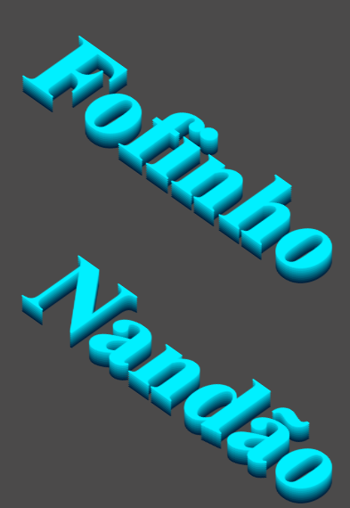

/* Efeito Isométrico Simplificado */
.isometric-text {
font-size: 8rem;
color: #00f0ff;
transform: rotateX(45deg) rotateZ(45deg);
text-shadow:
1px 1px 0 #00d2e6,
3px 3px 0 #00bcd1,
5px 5px 0 #00a6bc,
7px 7px 0 #0090a7,
9px 9px 0 #007a92,
11px 11px 0 #00647d,
13px 13px 0 #004e68,
15px 15px 0 #003853,
17px 17px 0 #00223e;
}
Aplique a classe no seu HTML:
<h1 class="isometric-text">TEXTO</h1>
Ajuste básico:
color: Escolha sua cor principaltext-shadow: Use 3 tons da mesma cor, cada um mais escurofont-size: Adapte ao seu layoutDicas rápidas:
Exemplo visual:
